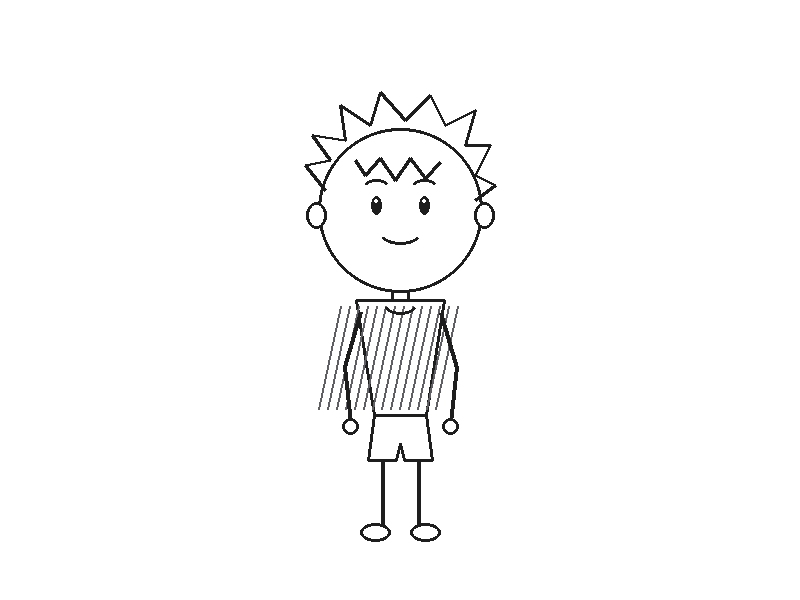

A lightweight Model Context Protocol (MCP) server that empowers Claude Desktop, Google Antigravity, Cursor, and autonomous agents to create, inspect, edit, and render hand-drawn Pencil2D animations headlessly.

From the series My First Crush. Created via MCP tools across 4 separated raster layers (Face, Hair, Torso, Camera) with 96 timeline frames at 12 FPS.
Procedural arc keyframes with squash and stretch, ground contact shadow, and programmatic head-to-toe raster frames rendered headlessly directly to GIF and MP4.
Pure Python implementation utilizing standard library and Pillow. No heavyweight GUI frameworks required to read, write, and manipulate .pclx archives.
Uses the Pencil2D AppImage CLI to render animations directly into MP4 (H.264), animated GIF, WebM, and transparent PNG sequences without opening windows.
Full control over Bitmap layers, Vector layers, Sound tracks, and Camera viewports. Non-destructively organize facial expressions, line art, and colors.
Import dozens or hundreds of frame images from folders or structured arrays in a single low-latency tool call, eliminating single-frame bottlenecks.
Embed WAV/MP3 voiceovers and audio tracks directly onto sound layers aligned to exact timeline keyframe timings.
Comprehensive project validator that inspects XML syntax, checks for missing PNG asset references, and catches frame gaps before rendering.
{
"mcpServers": {
"pencil2d": {
"command": "pencil2d-mcp",
"args": ["serve"],
"env": {
"PENCIL2D_APPIMAGE": "/path/to/pencil2d-linux-amd64-v0.7.2.AppImage"
}
}
}
}